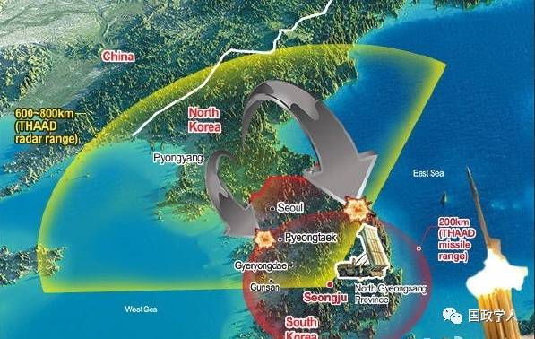
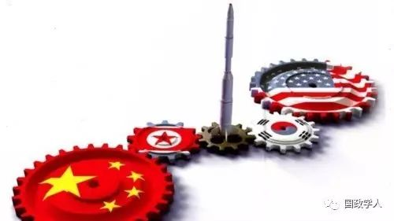

收录于合集

黄靖，新加坡国立大学李光耀公共政策学院李氏基金会讲座教授、亚洲与全球化研究所所长
近来，朝鲜半岛局势持续紧张。一方面，特朗普政府声称美国对朝的“战略忍耐”已经结束，美国航母战斗群集结朝鲜水域；另一方面，金氏政权“以强硬对强硬”，准备再次试验核武、发射导弹，声称随时准备开战。战端似乎一触即发。
显然，朝鲜半岛的危局事关中国自身的安全与发展，而其根源则在于朝鲜的拥核计划。只有朝鲜弃核，才能从根本上化解紧张局势，维护东北亚的和平稳定。因此，对朝鲜核武问题以及对朝政策，中国必须有一个清醒的反省和思考。
朝鲜核武问题的由来
上世纪90年代初，中美两国共同促成了朝韩同时加入联合国。在朝韩相互承认主权的基础上，中韩于1993年实现了关系正常化。然而，美国并没有像人们期待的那样，去谋求与朝鲜的关系正常化，而是以“历史的终结者”的姿态进一步向朝鲜施压。而此前为朝鲜提供国家安全保障的苏联与中国，一个已经垮台，另一个则以改革开放的姿态加入了以美国为首的世界秩序之中。
于是，朝鲜在1994年开始发展核武，其根本目的是为国家安全提供战略威慑，至少也提供一个有力的讨价还价的筹码。在平壤看来，其国家安全的钥匙握在美国手里。因此，自朝鲜启动核武计划以来，其唯一始终坚持不变的要求，就是要与美国直接对话，进而实现两国关系正常化。
克林顿政府视朝鲜发展核武为重大威胁。因此，通过积极谈判，于1994年达成《美朝核框架协议》：美国用经济援助、建设两个轻水反应堆、最终双边关系正常化为条件，换取朝鲜冻结并最终弃核。但是，由于美国国内保守派的抵制，该协议未能得到顺利实施。
2001年小布什当选总统后，终止了这一协议，并宣布朝鲜、伊朗和伊拉克为邪恶轴心。朝鲜再次为国家安全重启核武计划，而小布什执政期间对伊拉克和利比亚的入侵，更坚定了朝鲜发展核武的决心。
九一一事件之后，小布什认识到核扩散对美国安全的重大威胁，尤其是恐怖主义分子获得核原料，因而改变态度，积极参与中国发起的朝核问题六方谈判。最终通过冻结朝鲜的海外资金，迫使朝鲜同意于2007年7月关闭宁边的核设施，开始“去功能化”的步骤。这段历史，中国人大外委会主任傅莹今年5月1日在《中国新闻周刊》发表的《朝核问题的历史演进与前景展望》一文中已有详述。
朝核问题是制约中国的战略软肋
奥巴马即位时，美国已完成全球核材料(运送)监督系统工程，有足够信心封锁朝鲜核材料的外流。因此，华府对朝核问题有了新的战略思考。首先，奥巴马政府睿智地看到，朝鲜的拥核计划充分暴露了中国的战略两难。一方面，由于中朝的特殊关系以及朝鲜在中国安全环境中的关键地位，中国在朝核问题上投鼠忌器，除“劝阻”之外，并无其他有效手段要求朝鲜弃核。
另一方面，改革开放后的中国为了自身的“和平发展”，必须保持中美关系稳定，所以不会因朝鲜问题再次与美韩为敌。这对于朝鲜而言，意味着不能指望中国为其国家安全提供根本的保障。正是因为中国的这一战略两难，才使得金氏政权置中国利益于不顾，在拥核问题上越走越远。
其次，奥巴马当选时，日韩都有和美国渐行渐远的趋势。韩国在金大中、卢武铉两届总统时期(1998年至2008年)，对外政策持续“向中国漂移”(driftingawaytowardsChina)。日本民主党2009年执政后，公开提出不延续和美国在冲绳的军事基地协议。在这一形势下，急于解决朝核问题，不但会进一步消耗美国在亚太的战略资源，同时削弱美国掌控日韩的战略“抓手”。尤其是奥巴马在2010年提出亚太“再平衡”战略后，更加需强化美日韩安保同盟。
因此，奥巴马政权一改克林顿和小布什在朝核问题的积极姿态，采取“持续施压、拖而不决”的政策。一方面不理睬朝鲜的对话要求，对中国提出的各种议案拖延推诿，“冷冻”六方会谈；另一方面不断升级以朝鲜为假想敌的美韩军演、同时实施经济制裁，对朝鲜持续高压。其目的就是要把朝鲜逼到墙角，让其铤而走险。其结果是自2009年以来，朝核问题进入了傅莹所说的“制裁—核试—再制裁—再核试”的恶性循环。
美国在朝核问题上“持续施压、拖而不决”的根本目的，是要一石二鸟，制约中国。首先，美国充分利用中国在朝核问题上，既不能劝阻平壤弃核，又不愿和美日韩站在一边打压朝鲜的战略两难，在国际社会中造成只有中国能够制止朝核，而中国又不愿意这样做的印象，把朝核问题的责任推给中国，使其成为“中国问题”，从而剥夺中国在朝核问题上的道德制高点，同时利用朝核问题的恶性循环来消耗中国的战略资源，直至引发中国内部的政策争纷。
其次，朝核问题的日益恶化使美国不仅在战略上牢牢抓住了日韩两国，而且为其在韩国部署萨德反导系统提供了有力的借口。(事实上，随着中国远程打击力量的提升及俄罗斯在远东大量部署战略打击力量，美国必须将这一地区纳入其全球反导系统。)部署在韩国的萨德反导系统，是美国在东北亚监控中俄两国的千里眼，从而使区域战略平衡向美国倾斜。

在朝核问题上必须旗帜鲜明
显然，奥巴马政府在朝核问题上的“拖而不决”达到了预期效果。一方面中朝关系日益恶化，自习近平和金正恩上任以来，中朝之间近五年没有峰会，这在两国关系史上是前所未有的，以此足见中朝关系的尴尬和紧张。另一方面，随着萨德的部署，中韩关系也落入自1992年建交以来的最低点。更为严重的是，中国在朝核问题上的被动局面，已经开始对中国外交及“一带一路”的建设造成负面的影响和羁绊。
中国必须在朝核问题上重新思考，有所作为，扭转战略被动。习近平最近在和特朗普通话中，提出解决朝核问题三原则：其一，必须遵循联合国决议案处理；其二，各方应有所克制，避免局势恶化；其三，各方要相向而行，通过谈判解决朝核问题。
在此三项原则指导下，中国应该旗帜鲜明地提出自己的主张，有所作为。首先，必须明确“朝鲜弃核”是中国不可动摇的战略目的；明确“友好合作”是《中朝友好合作互助条约》的基础与前提。而金氏政权在拥核问题上一意孤行，置中国的重大利益和关切于不顾，既不友好，更不合作，已完全破坏中朝“互助”的基础。只有朝鲜弃核，中国才能依照条约为其国家安全尽自己的责任，并将积极帮助朝鲜推动包括国防科技现代化在内的国家现代化进程。
第二，要从理论上和实践上将金氏政权的稳定和朝鲜的国家稳定区分开来。金氏政权在拥核问题上肆无忌惮的极端行为，不仅危及朝鲜半岛以至整个亚太地区的和平与发展，也极大地伤害了朝鲜自身的国家安全和人民福祉。作为朝鲜友好、负责的邻邦，中国必须对半岛的和平及2500余万朝鲜人民的安居乐业有所担当，但这并不等于中国有捍卫金氏政权的责任和义务。
第三，中国将与美、俄、日、韩等相关国家一起认真执行联合国决议，同时通过积极谈判，迫使金氏政权弃核武计划，明白弃核是唯一出路，否则将面临政权垮台的危险。
最后，中国也应当公开表明，中国决不允许朝鲜陷于战乱，更不允许朝鲜变成东北亚的中东。冷战后科索沃、阿富汗、伊拉克、利比亚、叙利亚等国的动乱一再证明，开战绝不能解决问题，而恰恰是动乱的开始。毕竟，一旦战乱发生，只有中国有能力(当然也是为了中国自身的根本利益)为2500余万朝鲜人民提供食品、燃料和公共秩序，使其不至于成为四处奔波的难民。
换言之，以今天中国的能力和决心，不论是谁发起战争，能够最终掌控战后朝鲜局势、重建秩序者，非中国莫属。这一事实，点破又何妨？

美俄亲善大门被堵上了
美国7日以59枚“战斧”巡航导弹袭击了叙利亚政府军空军基地。对巴沙尔政权采取如此激烈的军事打击，华盛顿意欲何为？
袭击叙利亚，是共和党建制派的胜利。奥巴马第二任期，将美国的战略资源集中于“亚太再平衡”战略，在中东全面收缩，尤其在叙利亚内战和打击IS方面，更是踌躇不前。普京精准地抓住了这一战略机遇，强势卷入叙利亚内战，不仅一举夺得中东事务中的主动权，而且将俄罗斯与西方的博弈焦点从乌克兰腾挪到中东，进而充分暴露美欧之间在中东问题上的矛盾，弱化了美欧的反俄同盟。显然，共和党建制派对奥巴马在中东问题上的“软弱”十分不满，他们利用在美国军事和安全事务中的深厚影响，一直积极推动美国直接卷入叙利亚内战和打击IS的军事行动。
而特朗普当选后，反而比奥巴马更为压制建制派的中东政策主张。其根本原因在于特朗普及其前国家安全顾问弗林都意图在中东寻求同俄罗斯合作，共同打击恐怖势力，进而打开改善美俄关系的突破口。这是建制派绝对不能接受的。
因此，建制派在对俄政策上不遗余力地反制特朗普，力图“管控(manage)”这位桀骜不驯的总统。他们首先通过FBI泄露弗林和俄罗斯大使的电话录音迫使弗林辞职，护送与建制派关系密切的麦克马斯特将军就任国家安全顾问;继而策划特朗普麾下“四巨头”——防长马蒂斯、国务卿蒂勒森、国土安全部长凯利和国家安全顾问麦克马斯特——联手施压，将特朗普的首席战略顾问班农挤出国安会。紧接着，建制派抓住叙利亚政府使用化学武器的指控，通过特朗普自己的安全和外交团队向其提出军事打击叙利亚的建议。在这一局势下，特朗普不得不在麦克马斯特呈报的三个打击方案中选择一个，下令袭击叙利亚。
事实上，美国轰炸叙利亚的真正目标是俄罗斯，目的是从普京手里夺回中东事务的主动权。而俄罗斯也不甘示弱，立即对美国的袭击表达愤怒，并威胁今后在叙利亚不再对美国提供“安全保障”。如此一来，共和党建制派彻底打消了特朗普修复美俄关系的初衷，堵死了改善美俄关系的大门。
同时，攻击叙利亚也是给伊朗施压。叙利亚内战，实质是一场穆斯林什叶派与逊尼派之间的政治战争，伊朗坚决支持同是什叶派的巴沙尔政权。正是俄罗斯的空中压制和伊朗有力的地面支持，使巴沙尔政权得以扭转内战局面，转守为攻。美国袭击叙利亚，对地面作战的伊朗的威胁甚于俄罗斯。伊朗在袭击后发出严厉谴责，原因就在于此。
更具长远意义的是，军事打击巴沙尔政权有助于逆转美伊核协议，重启美国主导中东事务的传统格局。奥巴马政府努力与伊朗签署的核协议，尽管似乎解除了伊朗潜在的“核威胁”，但与美国的倒巴沙尔立场背道而驰。其结果是，美伊核协议不仅使共和党建制派怒气冲天，而且使美国同时开罪在中东的两个最重要盟友：以色列和沙特——遏制伊朗是以沙两国最重要的国家利益。袭击叙利亚不仅与建制派废弃美伊核协议的努力方向一致，也使美国在中东事务中重新与以色列和沙特站在了同一战线上。
简言之，袭击叙利亚是美国共和党建制派长期策划的结果。建制派能够在特朗普胜选后的第一个重大对外政策上迫使其就范，逆转特朗普修复美俄关系的初衷，同时压制伊朗，重新赢得中东传统盟友的支持，可见建制派力量之强大，手段之老辣。这标志着美国将以更强硬的态势卷入以叙利亚内战为焦点的中东事务，力图从俄罗斯手中夺回中东事务主导权。这一转变，不仅对美俄关系以及中东格局有重大影响，对特朗普政府今后的内政外交也具有深远意义。
本文来源： 国政前沿通讯
筛选：大本高文人
编辑：里仝
您可能还会喜欢：